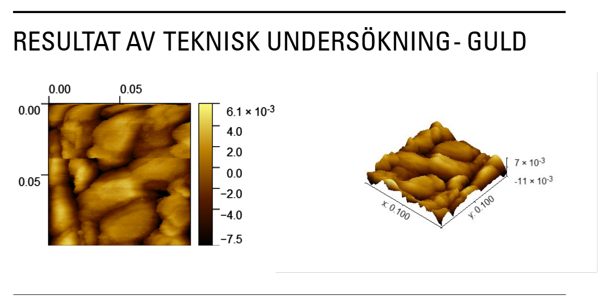
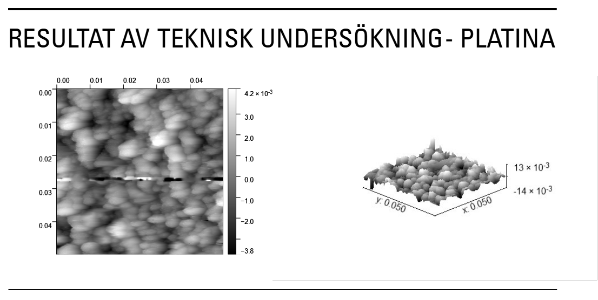
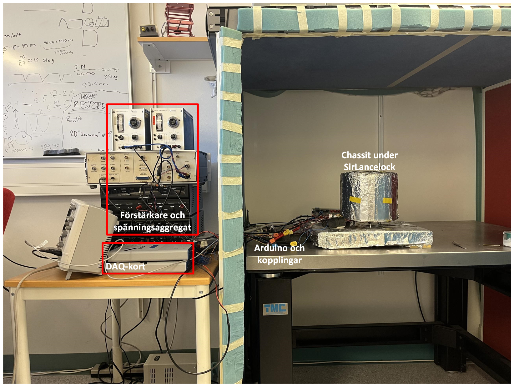
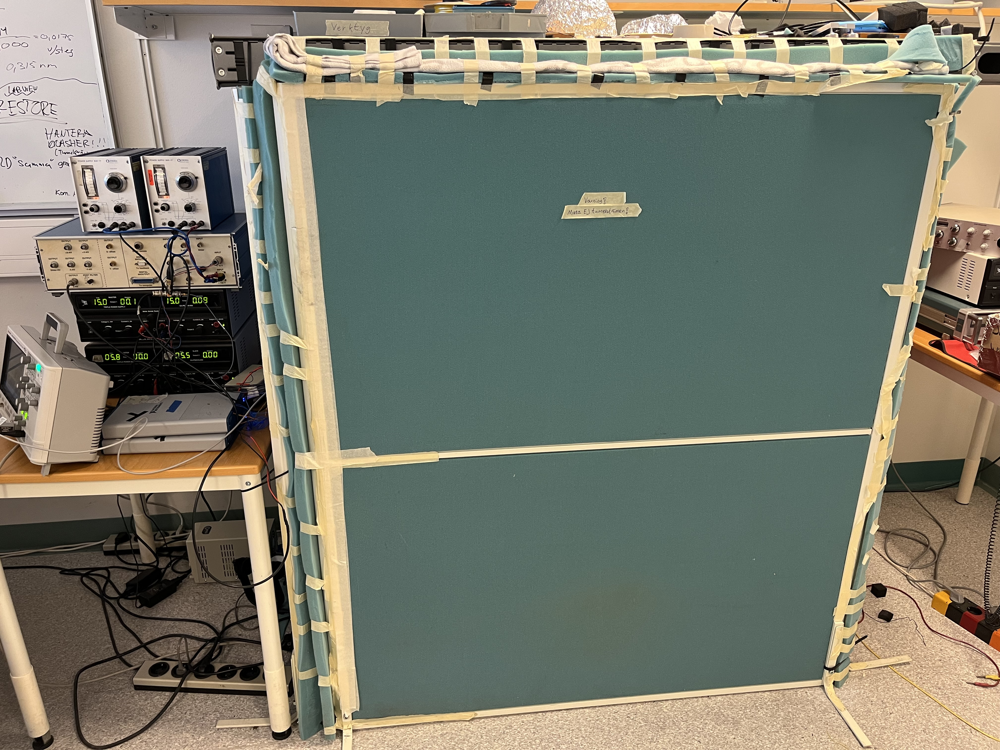
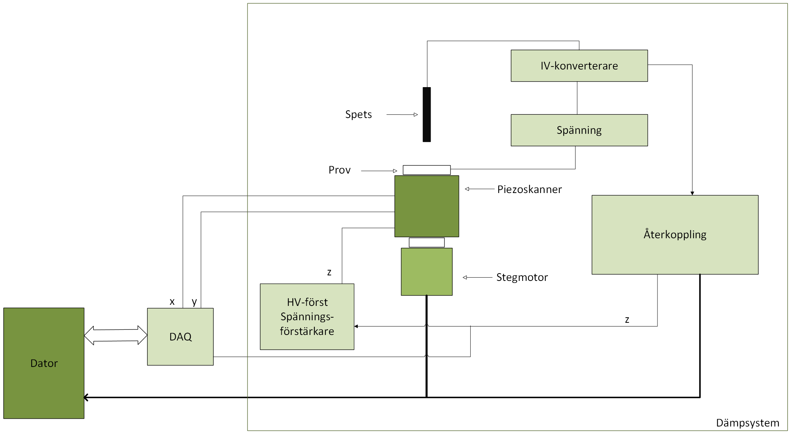
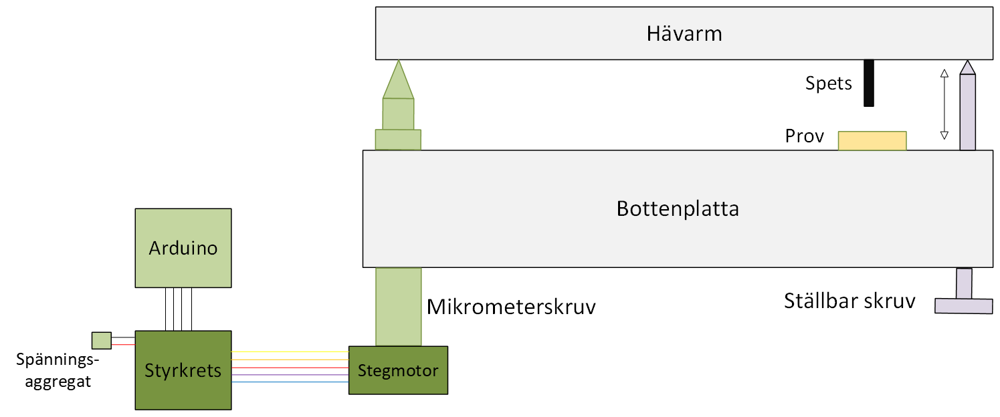

← Tillbaka till kandidatprojektet
Det färdiga sveptunnelmikroskopet.
Mikroskopets spets och provhållare.
Systemets mätuppställning.
Användargränssnittet som utvecklades i LabVIEW.
Topografisk mätning av ett guldprov.
Topografisk mätning av ett platinaprov.
Bildgalleri
Kandidatprojekt: sveptunnelmikroskop
Bilder från konstruktionen av mikroskopet, mätuppställningen och avbildningen av prover. Klicka på en bild för att öppna den i full storlek.





